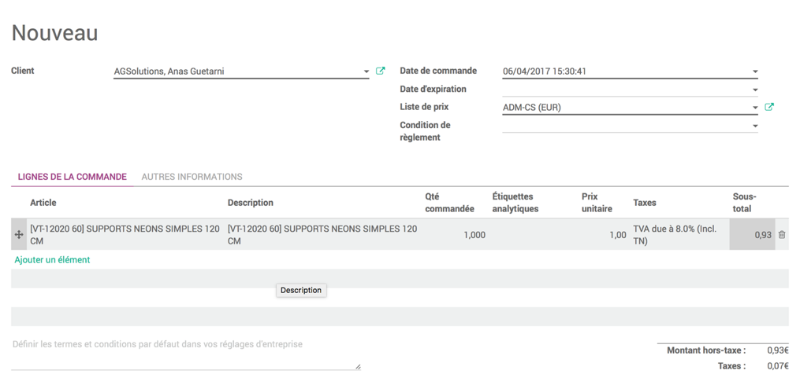
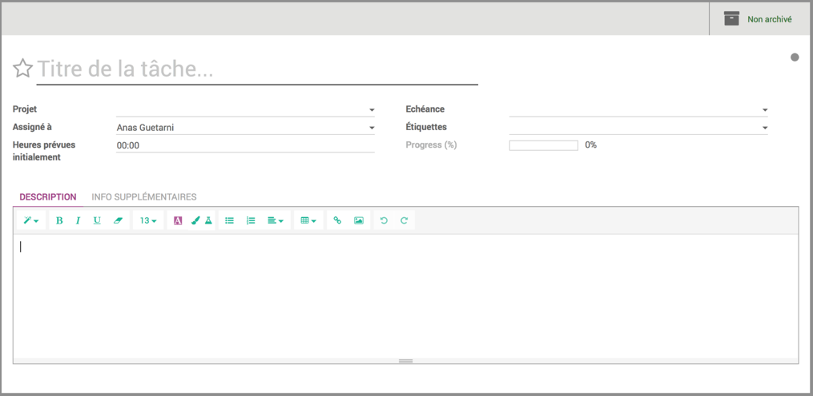
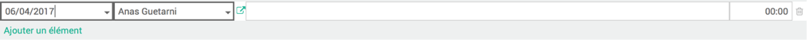

Workflow Opportunités
Tables des matières
I. Introduction
II. Pistes et opportunités
III. Devis et factures
IV. Projets et tâches
V. Feuilles
VI. Conclusion
I. Introduction
Objectifs:
- Processus de création d'une opportunité
- Liaison d'une opportunité à un devis
- Création d'une facture à partir du devis
- Création du projet et de tâches liées à l'opportunité
- Création des feuilles de temps liés aux tâches

II. Pistes et opportunités
Tabeau de bord des pistes

Création d'une piste

Tableau de bord des opportunités

My Pipeline

Création d'une opportunité

III. Devis et factures
Demande de prix au fournisseur
Création d'une demande de prix au fournisseur

Notes
- Marquer les liens avec la factures dans les notes internes
- Création d'article générale pour réutilisation
- TVA différentes selon les catégories d'articles
Création du devis lié à l'opportunité
Confirmation de la vente
Si l’opportunité que vous venez de créer est gagné et que la vente est acceptée, vous pouvez Flagger l’opportunité à ‘Win’ en revenant sur l’opportunité et en cliquant sur le bouton ‘Marqué comme gagné’.
Sur votre Pipeline, votre opportunité passera alors au statut ‘Win’.
Création de la facture liée au devis
Notes
- Création d'article générale pour réutilisation
- TVA différentes selon les catégories d'articles
IV. Projets et tâches
Création du projet par le responsable

Création des tâches
V. Feuilles de temps
Ajout des feuilles de temps aux tâches
Possibilité de créer plusieurs feuilles de temps pour la même tâche